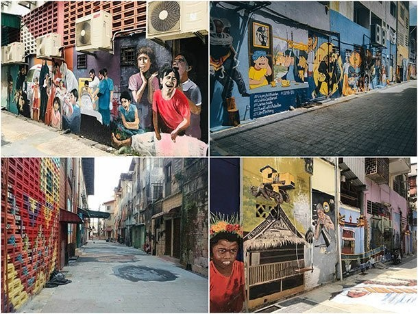
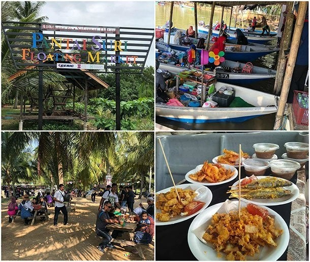
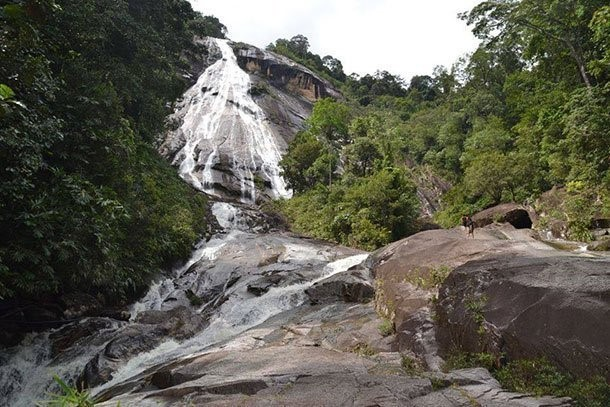
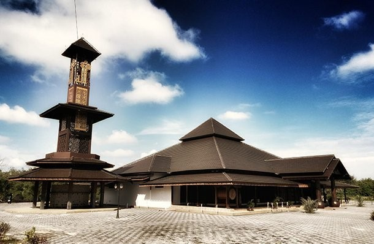
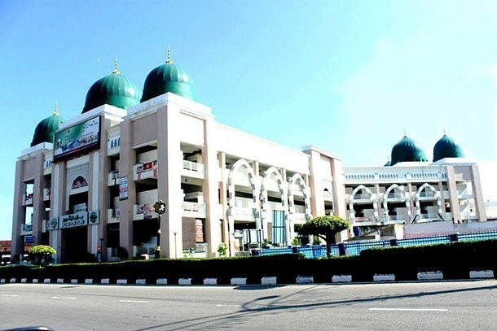
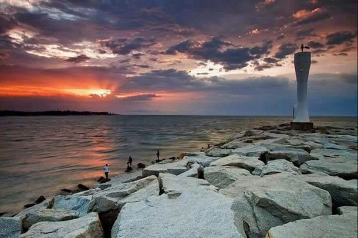

The cultural city of Kota Bharu, Kelantan in East Coast, instils a fresh breath onto street art in Malaysia. With interesting themes and vibrant colours, Kota Bharu offers a new outlook for tourists to be part of the town's heritage.


Mount Stong Kelantan Forest Reserve is one of the most attractive ecotourism holiday destinations in Malaysia. Known for its very high Jite Watches, this State Park has many other attractions. It is rich in flora and fauna including the world's largest flower, Rafflesia. In addition, some species of wildlife can also be found in this area such as Asian elephants, lettuce, Malayan tiger, goat, reptile, tapir and many other exotic wildlife.

This wooden mosque looks old so traditional and out of era but actually brand new Built by local private individual for public Muslim to do their daily Islamic rituals Masjid Ar Rahman Mukim Pulau Gajah wooden mosque is inspired by its local.

The Tok Guru is the largest and largest bazaar in Kelantan, and features a grand bazaar concept located in the heart of Kota Bharu city center. The bazaar is categorized as a visitor-friendly business premises, with various amenities available such as tour information counters, prayer rooms, parking lots, elevators, dining areas, ATM counters, public transport stops such as buses and taxis and many other amenities for visitors and tourists.
Rumah Api Pantai Senok

You can witness the calm atmosphere of the vast blue ocean beside the view of fishermen returning from fishing. While enjoying the tranquility around the beach area, you can also do activities such as bbq or camping on the beach or under the shrub.